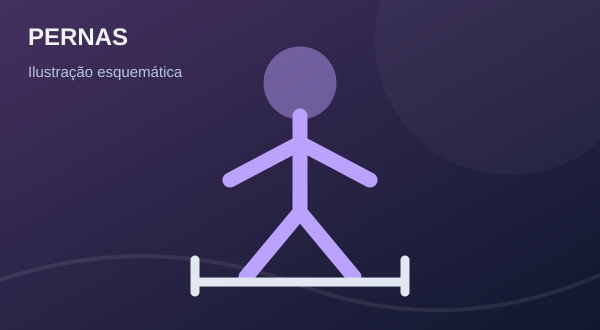
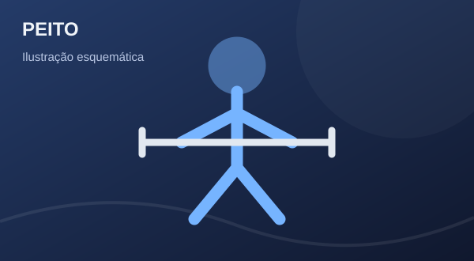
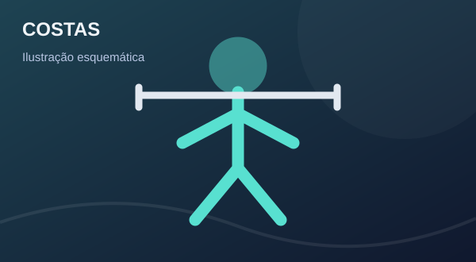

◈
Treinos que acompanham sua evolução
Monte e edite fichas, marque cada série, registre carga e repetições, acompanhe o histórico e cronometre suas sessões.
Supino máquina3 séries
0130 kg12 reps✓
0232 kg10 reps✓
SEU TREINO. SUA EVOLUÇÃO.
Organize suas fichas, registre séries e cargas, acompanhe alimentação, calorias e medidas corporais em um único lugar. Simples no dia a dia e completo quando você precisa.
Prévia funcional disponível • Demonstração com dados fictícios • Contas e assinaturas comerciais em desenvolvimento
Visão geral
Histórico por data
Supino máquina · 3 × 10–12
Crucifixo máquina · 2 × 12
Desenvolvimento · 2 × 12
TUDO NO MESMO LUGAR
Funcionalidades já disponíveis na versão local de demonstração.
Monte e edite fichas, marque cada série, registre carga e repetições, acompanhe o histórico e cronometre suas sessões.
Registre refeições, calorias, proteínas, carboidratos e gorduras. Ajuste metas conforme suas necessidades.
Acompanhe peso, cintura, quadril, peito, braços e outras medidas com históricos por data.
Conte com temporizador, hidratação, sono e hábitos para manter uma visão mais completa da sua rotina.
Busque por grupo muscular ou equipamento, consulte orientações básicas e adicione exercícios à sua ficha.
LEVE PARA A ACADEMIA
Instale como aplicativo web, salve registros localmente e exporte backups. A demonstração e os dados de cada navegador não ficam sincronizados.
Conhecer o aplicativo local →


PLANOS
Os planos pagos ainda não estão disponíveis para contratação. Nenhuma cobrança é realizada nesta versão.
DEMONSTRAÇÃO
Explore as telas, teste o fluxo de registro de treinos e veja dados fictícios.
PRO — EM PREPARAÇÃO
Versão comercial planejada com contas individuais, sincronização e armazenamento seguro.
PERGUNTAS FREQUENTES
Sim. Após publicar o aplicativo em HTTPS, abra no Safari, toque em Compartilhar e selecione “Adicionar à Tela de Início”.
Na versão local, neste navegador/dispositivo. Use a opção de backup JSON para guardar uma cópia. Ainda não há sincronização automática entre aparelhos.
Não. Os perfis e exemplos da demonstração são fictícios e usam uma área de armazenamento separada do aplicativo local.
Não. O sistema de contas e cobranças está em desenvolvimento, e nenhum checkout está ativo.
SEU PRÓXIMO PASSO